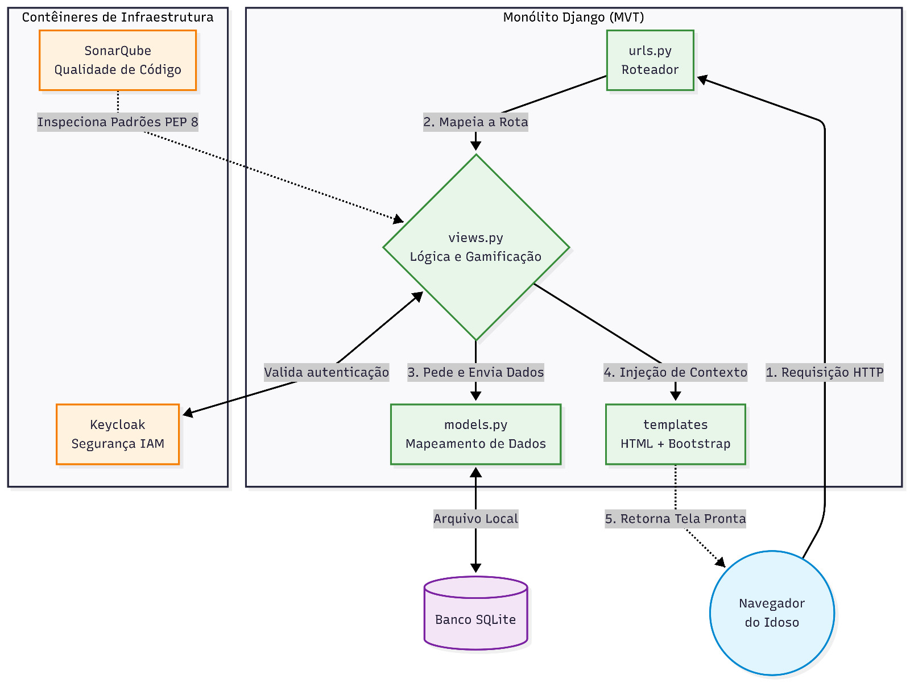
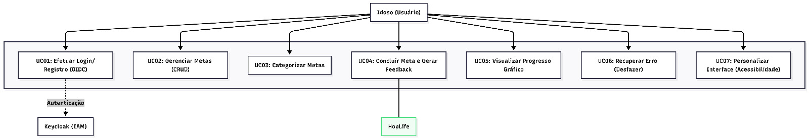
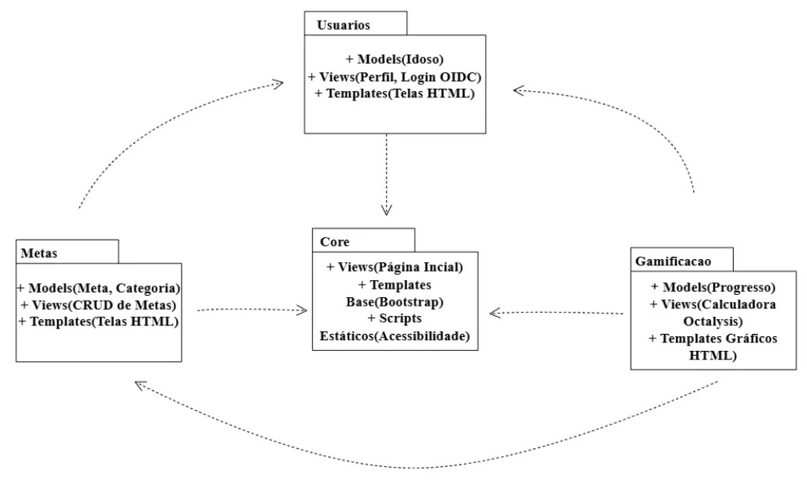
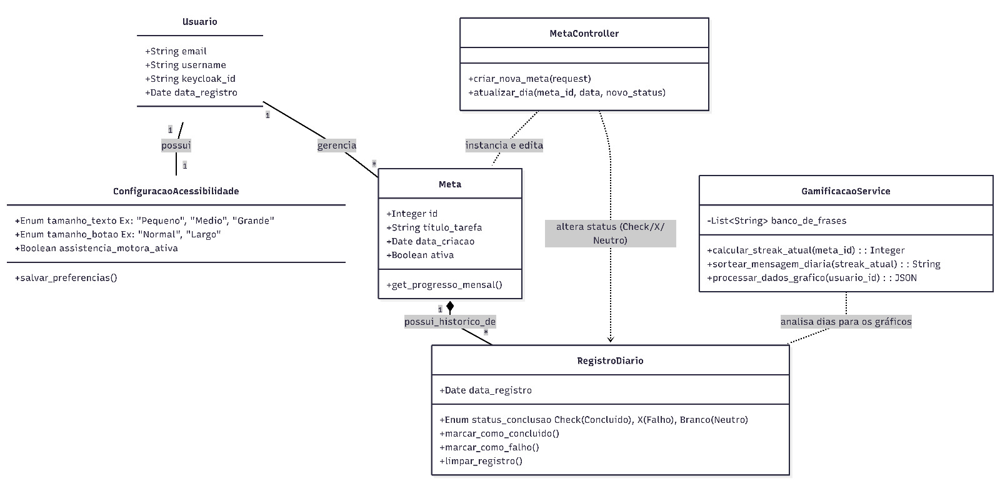
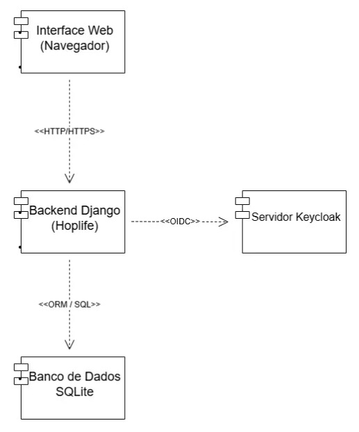
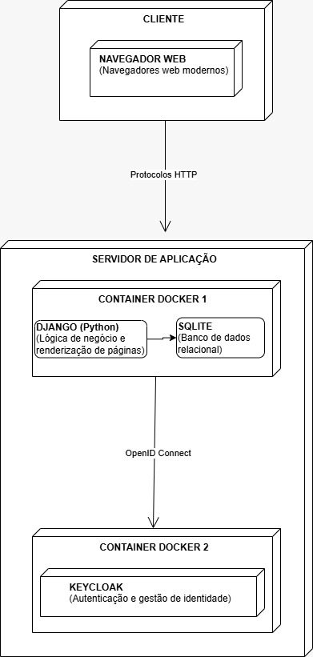

HOPLIFE
Documento de Arquitetura
Versão 1.1
Tabela - Integrantes do Grupo
| Matrícula | Nome | Função (responsabilidade) | Pontos de participação na elaboração |
|---|---|---|---|
| 242028628 | Arthur Rezende Barreto | 10 | |
| 222006570 | Arthur Souto Santos | 10 | |
| 241012131 | Davi Barbosa Alves | 10 | |
| 242015586 | Daniel Almeida Torquato | 10 | |
| 232002717 | Gabriela de Paula Nascimento | 10 | |
| 222008824 | Ithalo Ribeiro Dias | 10 | |
| 241012042 | Levi Evangelista Santos | 10 | |
| 232014511 | Maria Eduarda do Nascimento Vieira | 10 | |
| 232021928 | Maria Eduarda Rodrigues Morais | 10 | |
| 242005051 | Roberto de Oliveira Brito Filho | 10 |
Pontos de participação dos membros da equipe.
Devem fechar 100 pontos para toda a equipe.
Histórico de Revisões
| Data | Versão | Descrição | Autor(es) |
|---|---|---|---|
| 14/05/2026 | 1.0 | Criação do Documento | Equipe Hopper |
| 02/06/2026 | 1.1 | Correções textuais, ajustes estruturais e revisão geral | Arthur Rezede |
Sumário
- 1 Introdução
- 1.1 Propósito
- 1.2 Escopo
- 2 Representação Arquitetural
- 2.1 Definições
- 2.2 Justifique sua escolha.
- 2.3 Detalhamento
- 2.4 Metas e restrições arquiteturais
- 2.5 Visões
- 2.5.1 Visão de uso
- 2.5.2 Visão de organização lógica
- 2.5.3 Visão estrutural
- 2.5.4 Visão de Implantação
- 2.6 Restrições Adicionais e Atributos de Qualidade
- 2.6.1 Restrições Negociais e de Acesso
- 2.6.2 Atributos de Qualidade do Software
- 2.6.3 Segurança e Perfis de Acesso
- 3 Bibliografia
1 Introdução
1.1 Propósito
O presente documento tem como objetivo descrever a arquitetura do sistema Hoplife, desenvolvido pelo Grupo Hopper na disciplina de Métodos de Desenvolvimento de Software (MDS), referente ao primeiro semestre de 2026. O documento busca fornecer uma visão técnica abrangente da estrutura do software, apresentando os principais componentes arquiteturais, tecnologias adotadas, padrões de desenvolvimento, mecanismos de integração e a estratégia de gamificação baseada no framework Octalysis (CHOU, 2019), fundamental para as decisões técnicas relacionadas à construção da aplicação.
Além disso, este documento serve como referência para desenvolvedores, analistas de qualidade, testadores e demais stakeholders envolvidos no projeto, auxiliando na padronização do desenvolvimento, manutenção, evolução e validação do sistema ao longo das sprints.
A arquitetura proposta foi definida considerando os requisitos funcionais e não funcionais identificados no documento de visão do produto, com foco principal em acessibilidade, usabilidade, segurança, organização modular e facilidade de manutenção. Dessa forma, o documento descreve como tecnologias como Django, Bootstrap, SQLite, Docker, Keycloak e SonarQube serão utilizadas e integradas para garantir o funcionamento adequado da aplicação web, oferecendo suporte técnico para a implementação dos impulsos de engajamento (Core Drives) do Octalysis previstos para o público idoso.
1.2 Escopo
O detalhamento completo do escopo encontra-se descrito no arquivo "Grupo Hopper - Documento Visão". Em linhas gerais, o escopo do sistema Hoplife compreende o desenvolvimento de uma aplicação web voltada ao gerenciamento de metas pessoais e organização cotidiana, com foco em acessibilidade e inclusão digital para usuários idosos ou com baixa familiaridade tecnológica (FARIAS et al., 2015).
O sistema permitirá que os usuários realizem cadastro e autenticação, criem, editem, organizem e acompanhem metas pessoais de maneira simples e intuitiva. Além disso, a aplicação contará com recursos de acessibilidade visual e motora, como botões ampliados, alto contraste, navegação simplificada e mecanismos de prevenção de cliques acidentais (FARIAS et al., 2015).
O produto também incluirá funcionalidades de categorização de metas, acompanhamento visual de progressos, lembretes, sistema de gamificação leve com feedback positivo e mecanismos de ajuda contextual, visando aumentar o engajamento sem comprometer a clareza da interface.
2 Representação Arquitetural
2.1 Definições
O sistema será construído sob o estilo arquitetural monolítico, funcionando como uma aplicação web do tipo cliente-servidor e baseada no padrão estrutural Model-View-Template (MVT), nativo do framework Django (DJANGO SOFTWARE FOUNDATION, 2026). A solução organiza-se de forma lógica: a interface com o usuário (Template) focará em acessibilidade utilizando Bootstrap e em estratégias de engajamento baseadas no framework Octalysis (CHOU, 2019); enquanto a lógica de negócios (View) e a persistência de dados (Model) serão centralizadas no Django, comunicando-se com o banco de dados SQLite.
Além disso, a arquitetura expande o modelo monolítico tradicional ao integrar serviços externos em contêineres Docker. Essa abordagem garante a modularidade da infraestrutura, delegando a gestão de identidade e autenticação para o Keycloak (KEYCLOAK, 2026), enquanto a qualidade e a padronização do código-fonte são monitoradas continuamente através do SonarQube.
2.2 Justifique sua escolha
As decisões arquiteturais e tecnológicas detalhadas neste documento foram orientadas diretamente pelas restrições e objetivos estabelecidos no "Grupo Hopper - Documento Visão" e na declaração de escopo do projeto. Considerando que o Hoplife é focado na acessibilidade para o público idoso e deve ser desenvolvido sob o prazo estrito do calendário acadêmico, optou-se pela arquitetura monolítica modular. Essa abordagem garante maior agilidade de implementação, curva de aprendizado menor para a equipe e facilidade de manutenção em comparação a soluções distribuídas.
O Django (padrão MVT) foi selecionado como framework principal devido à sua rapidez de desenvolvimento, segurança nativa e forte integração com a linguagem Python (DJANGO SOFTWARE FOUNDATION, 2026). Essa escolha permite que a equipe foque na implementação do escopo descrito no documento, como a gamificação estruturada pelo framework Octalysis e a gestão de metas, em vez de despender esforço excessivo em configurações estruturais. Em alinhamento com a necessidade de simplicidade e eficiência para a fase atual do projeto, o banco de dados SQLite foi escolhido por dispensar configurações complexas de servidor.
Para atender aos requisitos não funcionais de segurança e proteção de dados ressaltados no Documento Visão, o Keycloak será utilizado para gerenciar a autenticação e o controle de acesso de forma externa e robusta (KEYCLOAK, 2026). Por fim, para assegurar a consistência do trabalho da equipe ao longo das sprints, o Docker foi adotado visando padronizar o ambiente de desenvolvimento entre todos os integrantes (DOCKER INC., 2026), enquanto o SonarQube atuará na análise contínua da qualidade do código entregue.
2.3 Detalhamento
Figura 1: Arquitetura do Sistema

Fonte: Elaboração própria
A figura 1 ilustra a arquitetura do sistema Hoplife, fundamentada no estilo Monolítico Modular com integração de serviços externos. Para atender às necessidades do projeto, os elementos genéricos desta arquitetura foram instanciados com as seguintes tecnologias: a Camada Cliente é instanciada pelos navegadores web padrão utilizados pelos usuários; a Camada de Aplicação (padrão MVT) é instanciada pelo framework Django (compondo o roteamento com urls.py, a lógica de gamificação nas funções Views, o mapeamento dos dados no Model, e as interfaces web nos Templates em Bootstrap); a Camada de Persistência é instanciada pelo banco de dados em arquivo único SQLite; e a Infraestrutura Externa é composta por contêineres Docker executando o Keycloak (para gestão de identidade) e o SonarQube (para garantia de qualidade).
Para garantir o funcionamento coeso da aplicação e a correta aplicação das regras de negócio, cada elemento do estilo arquitetural possui responsabilidades e interfaces estritamente definidas:
URL Dispatcher (urls.py)
Responsabilidade: Atuar como o roteador inicial do módulo. Ele lê o endereço acessado e encaminha a requisição para o processamento correspondente no back-end.
Interface (Regras de uso): Recebe como entrada requisições HTTP do navegador e mapeia padrões de URL acionando a respectiva função na View.
View (views.py - Lógica de Negócios)
Responsabilidade: É o "cérebro" da aplicação. Orquestra a segurança, aplica a lógica do sistema de metas e processa as estratégias de gamificação propostas.
Interface (Regras de uso): Espera receber dados de formulários e tokens de sessão. Produz como saída comandos para o Model e injeta os dados processados (contexto) no Template.
Template (Interface e Acessibilidade)
Responsabilidade: Desenhar a interface visual final. É o componente responsável por garantir a acessibilidade visual para o público idoso utilizando Bootstrap (BOOTSTRAP TEAM, 2026), além de tangibilizar os impulsos do framework Octalysis (como gráficos de progresso).
Interface (Regras de uso): Recebe variáveis embutidas pela View e produz o código HTML/CSS renderizado retornado ao navegador.
Model (models.py - Mapeamento de Dados)
Responsabilidade: Abstrair a complexidade de consultas SQL através da herança nativa do Django (DJANGO SOFTWARE FOUNDATION, 2026). Converte as regras de negócio em tabelas relacionais de forma automática.
Interface (Regras de uso): Recebe chamadas de métodos Python da View e as traduz em comandos de leitura/escrita no banco de dados.
Banco de Dados (SQLite)
Responsabilidade: Garantir o armazenamento local, leve e seguro de todo o conteúdo gerado dentro do sistema.
Interface (Regras de uso): Opera isolado da rede externa, recebendo entradas exclusivamente do componente Model do Django.
Keycloak (Gestão de Identidade - IAM)
Responsabilidade: Centralizar o cadastro e a autenticação, eximindo o monólito principal de lidar com o armazenamento direto de senhas.
Interface (Regras de uso): Comunica-se com o sistema via protocolo OpenID Connect (OIDC). Recebe requisições de login redirecionadas pela View e devolve Tokens que confirmam a autorização (KEYCLOAK, 2026).
SonarQube (Análise de Qualidade)
Responsabilidade: Atuar como o inspetor contínuo do código-fonte. Embora não opere diretamente durante o acesso do usuário final, é responsável por garantir que o código escrito nas camadas View, Model e Urls esteja livre de vulnerabilidades e siga o padrão PEP 8.
Interface (Regras de uso): Recebe o código-fonte da aplicação como entrada e produz como saída relatórios de métricas e alertas de code smells para a equipe de desenvolvimento.
2.4 Metas e restrições arquiteturais
Para garantir que o sistema Hoplife atenda aos seus requisitos funcionais e não funcionais, bem como aos padrões de qualidade exigidos para o projeto, foram estabelecidas as seguintes metas e restrições arquiteturais:
Padrão de Codificação e Qualidade Contínua (Restrição)
Descrição: Todo o código-fonte desenvolvido em Python para o Back-End (Django) deve seguir rigorosamente as diretrizes da PEP 8 (VAN ROSSUM; WARSAW; COGHLAN, 2026). Além disso, o código deve passar pela esteira de análise estática do SonarQube.
Justificativa: A adoção da PEP 8 garante a legibilidade e a padronização do código entre todos os membros da equipe, facilitando a manutenção e a revisão por pares (Code Review). O uso do SonarQube atua como um portão de qualidade (Quality Gate), bloqueando a integração de códigos com vulnerabilidades, code smells ou baixa cobertura de testes.
Tempo de Resposta e Usabilidade (Meta)
Descrição: O sistema deve ser capaz de processar e renderizar as páginas principais (como o dashboard de metas e gráficos de progresso) em um tempo máximo de 2 segundos para 95% das requisições em condições normais de rede.
Justificativa: Como o público-alvo é composto por idosos, a fluidez da navegação é um fator crítico para a acessibilidade e retenção (FARIAS et al., 2015). Tempos de carregamento elevados podem gerar frustração, confusão ("será que cliquei certo?") e abandono da plataforma.
Padronização do Ambiente de Execução (Restrição)
Descrição: O servidor de aplicação Django e os serviços de suporte, como o Keycloak, devem ser executados através de contêineres Docker (DOCKER INC., 2026). O banco de dados SQLite será armazenado internamente ao contêiner da aplicação.
Justificativa: Esta restrição elimina o risco de inconsistências entre os ambientes de desenvolvimento dos integrantes da equipe (o clássico problema do "funciona na minha máquina"). Garante também que a implantação (deploy) nos ambientes de homologação e produção ocorra de forma idêntica e isolada.
Delegação de Segurança e Autenticação (Restrição)
Descrição: É expressamente restrito o desenvolvimento de lógicas próprias de criptografia e armazenamento direto de senhas no banco de dados da aplicação. Toda a gestão de identidade e controle de acesso (IAM) deve ser delegada ao Keycloak.
Justificativa: A segurança da informação é um domínio complexo. Utilizar uma ferramenta consolidada no mercado como o Keycloak via protocolo OIDC (KEYCLOAK, 2026) garante a proteção dos dados sensíveis dos usuários contra vazamentos, além de fornecer mecanismos robustos de recuperação de conta e bloqueio de tentativas de invasão sem onerar o desenvolvimento da lógica de negócios.
Estruturação da Lógica de Gamificação (Restrição de Design)
Descrição: As funcionalidades de engajamento implementadas nas Views e Models do Django devem se restringir a instanciar impulsos White Hat do framework Octalysis (especificamente os Drives 1, 2 e 8) (CHOU, 2019), com foco em reforço positivo.
Justificativa: Restringir o escopo da gamificação evita a criação de dinâmicas agressivas ou punitivas (como contadores de tempo e escassez) que poderiam gerar ansiedade em usuários idosos. A arquitetura deve suportar apenas o processamento de dados que gerem mensagens motivacionais, gráficos de evolução e sequências (streaks) saudáveis
Controle de Eventos e Requisições (Restrição)
Descrição: Caso a opção de acessibilidade motora seja ativada o Front-end deve utilizar técnicas de interceptação (como debounce e dead zones) na comunicação com o Django.
Justificativa: Essa medida impede que toques acidentais ou repetidos, muito comuns em usuários com dificuldades motoras, gerem múltiplas requisições HTTP simultâneas. Isso evita o travamento do sistema e o registro duplicado de informações no banco de dados SQLite.
Padronização de Front-end via Bootstrap (Restrição)
Descrição: A construção da interface visual (Camada Template) está restrita ao uso do framework Bootstrap.
Justificativa: Essa restrição estrutural elimina a necessidade de estilização manual extensiva e garante que o sistema atenda nativamente aos requisitos não funcionais de opções de acessibilidade visual do público idoso (como contraste mínimo de 4,5:1 e botões com área mínima de toque de 44x44 pixels).
2.5 Visões
Nesta seção, a arquitetura do sistema HopLife é detalhada através de diferentes perspectivas, abrangendo desde o escopo funcional até a organização lógica e física dos componentes.
2.5.1 Visão de uso
A visão de uso estabelece o escopo funcional do HopLife, focando na interação entre o usuário final e as capacidades do sistema para promover a organização pessoal e o engajamento através da gamificação.
Resumo do Escopo: O HopLife é uma plataforma de gerenciamento de metas pessoais voltada especificamente para o público idoso (60+). O sistema se diferencia por oferecer uma interface adaptável, onde o usuário pode configurar os parâmetros de acessibilidade visual e motora, além de receber incentivos comportamentais baseados nos drivers 1, 2 e 8 do framework Octalysis (CHOU, 2019).
A Figura 2 apresenta o diagrama de caso de uso do sistema, identificando o idoso como ator principal e o Keycloak como ator secundário.
Figura 2: Diagrama de Caso de Uso

Fonte: Elaboração Própria
Conforme ilustrado na Figura 2, o usuário idoso é o principal ator do sistema, podendo logar no sistema, gerenciar metas pessoais, acompanhar seu progresso e configurar recursos de acessibilidade. O Keycloak participa do processo de autenticação, garantindo que o acesso às funcionalidades ocorra de forma segura e centralizada. Os casos de uso representados demonstram as funcionalidades essenciais previstas para atender às necessidades de organização pessoal e engajamento dos usuários.
2.5.2 Visão de organização lógica
A organização lógica do Hoplife foi projetada utilizando a modularização nativa do framework Django (Apps), agrupando a arquitetura MVT (Models, Views e Templates) em pacotes focados no domínio do negócio. O software é subdividido nos seguintes pacotes principais:
Pacote Core
Razão Lógica: É o alicerce estrutural do sistema. Contém as Views da Página Inicial (HomeView) e lógica do tutorial de primeiro acesso (TutorialView).
Interfaces de Comunicação: Fornece os Templates Base (Bootstrap) e os Scripts Estáticos (Acessibilidade). É o pacote central do sistema: não depende de nenhum outro, mas recebe setas de dependência de todos os demais (Usuários, Metas e Gamificação), que herdam sua estrutura visual.
Pacote Usuários
Razão Lógica: Responsável pelo gerenciamento de identidade. Contém o Model de Idoso (para salvar preferências) e as Views responsáveis pelo Perfil e pelo Login OIDC (integração com Keycloak).
Interfaces de Comunicação: Aponta para o Core para herdar a estrutura visual. Funciona como base de dados para os pacotes de Metas e Gamificação, que precisam saber quem é o usuário logado para funcionar.
Pacote Metas
Razão Lógica: Gerencia as atividades diárias. Possui os Models de Meta e Categoria (US4, US5 e US6). Também abriga as Views focadas no CRUD de Metas (CriarMetaView, ListarMetasView, ConcluirMetaView e DeletarMetaView). Suas respostas são enviadas para os Templates de Telas HTML.
Interfaces de Comunicação: Possui setas de dependência apontando para o Usuários (para atrelar a tarefa ao perfil) e para o Core. Além disso, envia eventos de conclusão de tarefas que são interceptados pelo pacote de Gamificação.
Pacote Gamificação
Razão Lógica: É o motor de retenção do idoso. Estrutura-se com os Models de Progresso e Recompensa (US9). Suas lógicas de negócio funcionam como uma Calculadora Octalysis (CalcularOfensivaView e GerarGraficoView - US7), renderizando os resultados nos Templates Gráficos HTML.
Interfaces de Comunicação: É o pacote com mais dependências. Aponta para Metas (para saber quais tarefas foram concluídas), para Usuários (para atualizar a pontuação do idoso) e para o Core (para renderizar os gráficos na interface base).
A Figura 3 apresenta a organização lógica dos pacotes do sistema.
Figura 3: Diagrama de Pacotes

Fonte: Elaboração Própria
Conforme apresentado na Figura 3, a separação em pacotes favorece a modularidade do sistema, reduzindo o acoplamento entre funcionalidades e facilitando a manutenção e evolução da aplicação.
2.5.3 Visão estrutural
A Figura 4 apresenta o diagrama de classes do HopLife, ilustrando a estrutura de dados e as regras de negócio do sistema, seguindo os princípios de separação de responsabilidades (MVT). A arquitetura foi desenhada para garantir a persistência das configurações de acessibilidade e viabilizar o acompanhamento diário de hábitos.
As classes estão organizadas em três frentes principais de responsabilidade:
Gestão de Identidade e Acessibilidade
Usuario: Classe central que representa o idoso no sistema. Ela armazena os dados básicos e o keycloak_id, garantindo que a autenticação seja delegada de forma segura ao serviço Keycloak.
ConfiguracaoAcessibilidade: Diretamente associada ao usuário (relação 1 para 1), esta classe garante que as preferências visuais (tamanho do texto e dos botões) e motoras sejam salvas no banco de dados. Isso permite que o idoso tenha a mesma experiência adaptada, independentemente do dispositivo (celular, tablet ou computador) que utilize para acessar o HopLife.
Estrutura de Metas e Histórico Diário
O sistema adota um modelo de rastreamento de hábitos contínuo, separando a definição do hábito do seu cumprimento diário:
Meta: Representa o objetivo criado pelo usuário (ex: "Tomar remédio"). É a entidade "pai" que gerencia o propósito da tarefa.
RegistroDiario: Através de uma relação de composição forte, cada Meta possui múltiplos registros diários. O atributo status_conclusao (Enum) é o grande diferencial, permitindo registrar precisamente se o idoso cumpriu o hábito (Check), falhou (X) ou se o dia foi neutro (Branco). Essa granularidade é fundamental para gerar gráficos precisos.
Lógica de Controle e Serviços (Gamificação)
Para evitar a sobrecarga de responsabilidades nos modelos de dados, a inteligência do sistema foi abstraída em controladores e serviços:
MetaController: Atua como a interface de controle (View do Django). É o maestro que recebe as requisições do Front-end (como criar uma meta ou atualizar o dia) e manipula o RegistroDiario correspondente. Ele também é o ponto onde são tratadas as lógicas de proteção motora, como ignorar múltiplos cliques acidentais.
GamificacaoService: Concentra toda a lógica de retenção de usuários. Em vez de operar com sistemas complexos de pontuação, este serviço atua analisando o RegistroDiario para calcular os dias seguidos (calcular_streak_atual). Com base nesse streak, ele seleciona mensagens de reforço positivo (sortear_mensagem_diaria) e processa os dados em formato JSON para alimentar os gráficos visuais (processar_dados_grafico), focando na satisfação e no encorajamento do idoso.
Figura 4: Diagrama de Classes

Fonte: Elaboração Própria
Conforme apresentado na Figura 4, o modelo estrutural organiza as entidades centrais do sistema em torno do usuário e de suas metas. As associações entre Usuario, ConfiguracaoAcessibilidade, Meta e RegistroDiario permitem a persistência das preferências de acessibilidade e do histórico de cumprimento das atividades. Além disso, as classes MetaController e GamificacaoService concentram a lógica de negócio e de engajamento, mantendo a separação de responsabilidades proposta pela arquitetura MVT.
A Figura 5 apresenta o diagrama de componentes da aplicação.
Figura 5: Diagrama de Componentes

Fonte: Elaboração Própria
A figura acima, correspondente ao diagrama de componentes, ilustra a arquitetura de execução do HopLife, definindo os módulos físicos do sistema e os protocolos que intermediam a comunicação entre eles:
Interface Web (Navegador): Componente de front-end responsável por renderizar a interface para o idoso (HTML/CSS/JS via Bootstrap). Comunica-se com o servidor exclusivamente via requisições <
Backend Django (HopLife): É o componente central da aplicação. Ele processa a lógica de negócios, o motor de gamificação e as regras de acessibilidade, servindo como o intermediário entre a interface, o banco de dados e o serviço de autenticação.
Servidor Keycloak: Componente externo dedicado ao Gerenciamento de Identidade e Acesso (IAM). A comunicação com o backend ocorre via protocolo <
Banco de Dados SQLite: Componente de persistência de dados local. A interação do backend com este componente é abstraída pela camada <
2.5.4 Visão de Implantação
A visão de implantação descreve a execução física do sistema HopLife, apresentando a distribuição dos artefatos de software nos ambientes de hardware e rede. Essa visão complementa a arquitetura lógica, oferecendo uma perspectiva focada na infraestrutura.
O software será implantado em um ambiente de execução local (localhost), utilizando a infraestrutura de hardware dos computadores da equipe de desenvolvimento. Considerando as restrições de calendário da disciplina acadêmica e a ausência de necessidade de disponibilidade pública contínua nesta fase, o sistema será validado localmente. Essa escolha justifica-se por garantir agilidade nos ciclos de teste, dispensar custos com hospedagem e permitir que a equipe foque seus esforços na implementação da lógica de gamificação e nos requisitos de acessibilidade.
O ambiente de execução operará segundo as tecnologias de conteinerização Docker, que envelopará o servidor de aplicação (Django) e os serviços de suporte (Keycloak). A implantação via Docker é justificada por isolar e encapsular todas as dependências do software, padronizando o ambiente de execução e eliminando o risco de inconsistências entre as máquinas dos integrantes do grupo. No lado do cliente, a interface será executada diretamente em navegadores web de dispositivos físicos (desktops, notebooks ou tablets), utilizando as diretrizes responsivas do framework Bootstrap.
Assim como o restante da aplicação, o banco de dados SQLite será implantado internamente ao contêiner principal do sistema. Sua utilização justifica-se por ser uma solução baseada em arquivo único, o que reduz drasticamente a latência de rede interna, facilita a portabilidade do projeto entre os membros da equipe e atende perfeitamente ao volume de dados previsto, dispensando a complexidade de gerenciamento de um servidor de banco de dados externo.
A Figura 6 apresenta o diagrama de implantação do sistema HopLife.
Figura 6: Diagrama de Implantação

Fonte: Elaboração Própria
Conforme ilustrado na Figura 6, a infraestrutura é composta por um ambiente Docker responsável por hospedar os componentes da aplicação. O contêiner principal executa o Django juntamente com o banco SQLite, enquanto o Keycloak é executado em um contêiner separado, permitindo isolamento dos serviços e maior organização da infraestrutura.
2.6 Restrições Adicionais e Atributos de Qualidade
Esta seção descreve as restrições operacionais e os padrões de qualidade que orientam o desenvolvimento do HopLife, garantindo que a solução seja tecnicamente viável e adequada às necessidades do público idoso.
2.6.1 Restrições Negociais e de Acesso
O software será operado em um ambiente de execução local (localhost), utilizando a infraestrutura de contêineres Docker. Esta escolha garante a paridade de ambiente entre todos os membros da equipe de desenvolvimento.
Identificação e Login: Embora o software não seja hospedado publicamente na Internet nesta fase, o acesso às funcionalidades personalizadas exige autenticação obrigatória via Keycloak. Esta restrição garante que cada idoso acesse apenas suas próprias metas e histórico, preservando a integridade da experiência de gamificação.
Capacidade de Operação: O sistema é dimensionado para priorizar a Qualidade de Uso e a consistência dos dados em detrimento da escala massiva de acessos. O foco está em garantir que as transações de dados (como o registro de conclusão de metas) ocorram sem falhas no banco de dados SQLite, assegurando uma experiência fluida para os usuários em ambiente de teste.
2.6.2 Atributos de Qualidade do Software
Considerando o perfil do público-alvo (60+), os seguintes atributos de qualidade foram definidos como prioritários:
Usabilidade e Acessibilidade (Crítico): O sistema deve seguir diretrizes rígidas de acessibilidade visual (alto contraste e fontes legíveis) e motora. Uma restrição de usabilidade imposta é que as funcionalidades principais devem ser acessíveis em, no máximo, 3 cliques, minimizando a carga cognitiva.
Confiabilidade: Dada a natureza gamificada do software (baseada no framework Octalysis), o sistema deve garantir a persistência exata dos streaks (sequências) e pontuações. Qualquer falha na gravação desses dados compromete a motivação do usuário, tornando a integridade dos dados um requisito de alta prioridade.
Portabilidade: Através do uso de Docker, o software deve ser capaz de ser executado de forma idêntica em diferentes sistemas operacionais (Windows, Linux e macOS) sem necessidade de reconfiguração manual, facilitando a colaboração da equipe.
2.6.3 Segurança e Perfis de Acesso
A segurança do sistema é baseada na segregação de funções, garantindo que perfis diferentes tenham permissões proporcionais às suas necessidades. A Tabela 1 apresenta os perfis de acesso do sistema e suas respectivas permissões.
Tabela 1: Permissões e Justificativas
| Perfil | Descrição das Permissões e Justificativa |
|---|---|
| Usuário (Idoso) | Possui acesso exclusivo à "porta da frente" da aplicação. Pode gerenciar suas próprias metas, visualizar seu progresso e personalizar as configurações de sua interface. Justificativa: Proteção da privacidade e foco na experiência de uso simplificada. |
| Equipe (Administrador) | Utiliza a interface administrativa nativa do framework Django. Possui permissões para gerenciar tabelas do sistema, dar suporte a usuários e auditar logs de erro. Justificativa: Garantir a manutenibilidade e a recuperação do sistema em caso de falhas técnicas. |
Fonte: Elaboração Própria
A Tabela 1 demonstra a separação de responsabilidades entre os perfis existentes no sistema. Essa divisão contribui para a segurança da informação, garantindo que usuários comuns tenham acesso apenas aos seus próprios dados, enquanto a equipe administrativa possui permissões adicionais para manutenção e suporte da aplicação.
3 Bibliografia
- OOTSTRAP TEAM. Bootstrap Documentation. 2026. Disponível em: https://getbootstrap.com/docs/. Acesso em: 14 mai. 2026.
- DJANGO SOFTWARE FOUNDATION. Django Documentation. Versão 5.x. Disponível em: https://docs.djangoproject.com/. Acesso em: 14 mai. 2026.
- DOCKER INC. Docker Documentation. Disponível em: https://docs.docker.com/. Acesso em: 14 mai. 2026.
- KEYCLOAK. Keycloak Documentation - Open Source Identity and Access Management. Disponível em: https://www.keycloak.org/documentation. Acesso em: 14 mai. 2026.
- FARIAS, Josivania Silva et al. Inclusão digital na terceira idade: um estudo sobre a propensão de idosos à adoção de tecnologias da informação e comunicação (TICs). Revista Gestão & Tecnologia, Pedro Leopoldo, v. 15, n. 3, p. 164–188, set./dez. 2015.
- VAN ROSSUM, Guido; WARSAW, Barry; COGHLAN, Nick. PEP 8 – Style Guide for Python Code. Disponível em: https://peps.python.org/pep-0008/. Acesso em: 14 mai. 2026.
- CHOU, Yu-kai. Actionable Gamification: Beyond Points, Badges and Leaderboards. Fremont: Octalysis Media, 2019.